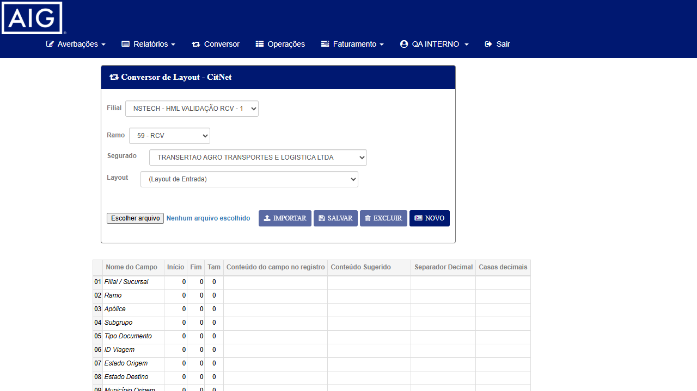
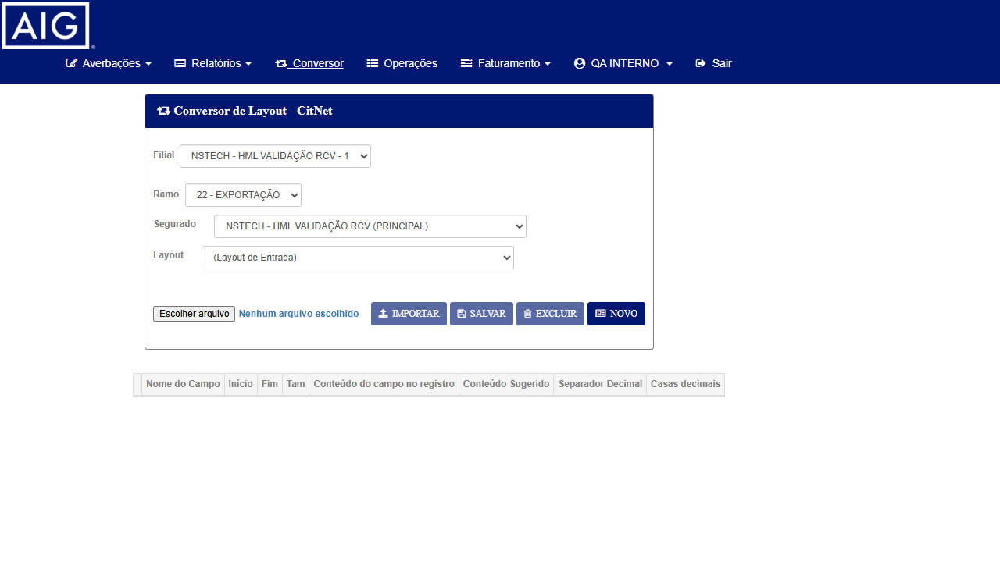

CT-CVA-001
Processar arquivo com layout DRK LOG (35 colunas — sem v_is_cnn_rcf) deve concluir sem erro
P1
REPROVADO
▾
Tipo
Positivo — Reteste do fix (cenário que gerava o bug)
Pré-condições
- AIG CITNET HML acessível:
https://aig-hml-faturamento.nsseg.com.br/citnet/
- Credenciais CITNET AIG disponíveis (confirmar com Wesley — padrão esperado:
interno / 11)
- Arquivo CSV de teste com 35 colunas no formato DRK LOG (extrair do
LogErro03072026.zip ou preparar arquivo sintético com a linha bruta do log: Tipo Doc = "C", CNPJ Emb = "27617104000104")
- Layout "DRK LOG" configurado no conversor CITNET para ramo RCTR-C
Passos
- Acessar
https://aig-hml-faturamento.nsseg.com.br/citnet/ e realizar login com as credenciais AIG
- Navegar via menu: Conversor (link no menu lateral ou home)
- Selecionar ramo: RCTR-C
- Clicar em "Escolher arquivo" e selecionar o arquivo CSV de 35 colunas (layout DRK LOG)
- Clicar em IMPORTAR e aguardar confirmação de importação
- No campo "Nome do Arquivo de Lay-Out de Entrada", selecionar o layout DRK LOG (35 colunas)
- Clicar em CONVERTER
- Aguardar resultado na tabela de preview
- Clicar em PROCESSAR
- Aguardar modal de resultado
Critério de Aceite
✓ Os embarques são processados sem erro
✓ Modal de resultado exibe "Aceitos: N" com valor > 0
✓ NÃO aparece modal "Erro no processamento dos dados!" (HTTP 500)
✓ Campo c_cdd_dst (código do município de destino) recebe valor numérico correto — não o literal "C"
✓ CNPJ do embarcador exibe 27617104000104 (dado do log original)
Resultado da Execução (10/07/2026)
✗ BUG CONFIRMADO — Fix NÃO está funcionando em HML
Ao clicar IMPORTAR com o arquivo DRK LOG de 35 colunas, o sistema exibiu imediatamente:
"ATENÇÃO! Erro ao tentar enviar o arquivo conversor!"
Configuração usada: Filial NSTECH HML VALIDAÇÃO RCV-1 · Ramo 59-RCV · Segurado TRANSERTAO AGRO TRANSPORTES E LOGISTICA LTDA
Arquivo: 7695-drk-log-35col.txt (pipe-delimited, ramo 54, dados.Length == 37)
Causa: FormatException em ProcessaLinha_Aig case 54 → HTTP 500 → modal de erro
Evidências
EV1 — Conversor AIG HML com configuração do teste (antes do IMPORTAR):

Nota: screenshot do erro "Erro ao tentar enviar o arquivo conversor!" não foi capturado (modal foi fechado antes da captura). O servidor AIG HML ficou indisponível (502) nos ciclos seguintes, impossibilitando nova reprodução.
CT-CVA-002
Regressão — Layout completo (36 colunas, com v_is_cnn_rcf) continua processando corretamente
P1
BLOQUEADO
▾
Tipo
Regressão — Garantir que o fix não afetou o comportamento do layout AIG padrão (36 colunas)
Pré-condições
- Mesmo ambiente AIG CITNET HML do CT-CVA-001
- Arquivo CSV de teste com 36 colunas (layout AIG completo, incluindo
v_is_cnn_rcf)
- Layout de 36 colunas configurado ou selecionável no sistema
Passos
- Mesmos passos de login do CT-CVA-001
- Navegar para Conversor → RCTR-C
- Selecionar arquivo CSV com 36 colunas (layout completo)
- Clicar em IMPORTAR
- Selecionar layout de 36 colunas (layout AIG padrão/completo)
- Clicar em CONVERTER
- Clicar em PROCESSAR
- Verificar resultado
Critério de Aceite
✓ Embarques processados sem erro (comportamento idêntico ao anterior ao fix)
✓ Campos c_cdd_dst, tipo de documento e CNPJ do embarcador com valores corretos
✓ Modal de resultado mostra "Aceitos: N" > 0 e "Rejeitados: 0" (ou motivo legítimo se houver rejeição por dados inválidos)
Motivo do Bloqueio
✗ BLOQUEADO — CT-CVA-001 REPROVADO (fix não funciona em HML) + arquivo de 36 colunas não disponível para teste.
CT-CVA-002 (regressão do layout completo) só pode ser executado se CT-CVA-001 (layout 35 colunas) for corrigido e o fix deployado novamente em HML.
CT-CVA-003
Exploratório — Outros ramos AIG no conversor não foram impactados pelo fix
P2
BLOQUEADO
▾
Tipo
Exploratório — Verificar se o fix em ProcessaLinha_Aig case 54 não afetou outros cases do switch (outros ramos AIG no conversor)
Guias de exploração
- Se AIG usa outros ramos no CITNET conversor (ex: RCTA-C, Transporte Nacional), testar um deles
- Verificar se a tela de Conversor exibe todos os ramos habilitados para AIG
- Tentar importar arquivo com 0 linhas (arquivo vazio) → sistema deve tratar graciosamente
- Tentar importar arquivo com delimitador errado → verificar mensagem de erro
Critério de conclusão
✓ Outros ramos AIG (se existirem) processam corretamente
✓ Nenhum novo erro identificado além do escopo do fix
✓ SE achado bug: registrar com passos + evidências
Achados durante exploração (10/07/2026)
✗ BLOQUEADO — Servidor AIG HML ficou indisponível (502) durante execução, impedindo completar a exploração.
Achados parciais antes do bloqueio:
- Ramos disponíveis no Conversor AIG HML: 22-EXPORTAÇÃO, 22-IMPORTAÇÃO, 59-RCV
- Ramo 54-RCTR-C não aparece no dropdown (para nenhuma filial testada)
- Segurados disponíveis no ramo 59-RCV: TRANSERTAO AGRO, NSTECH HML VALIDAÇÃO RCV
- Nenhum erro identificado na navegação/setup do Conversor para ramos 22 e 59
Evidências
EV-EXP — Conversor AIG HML (ramo 22-EXPORTAÇÃO, durante exploração):
